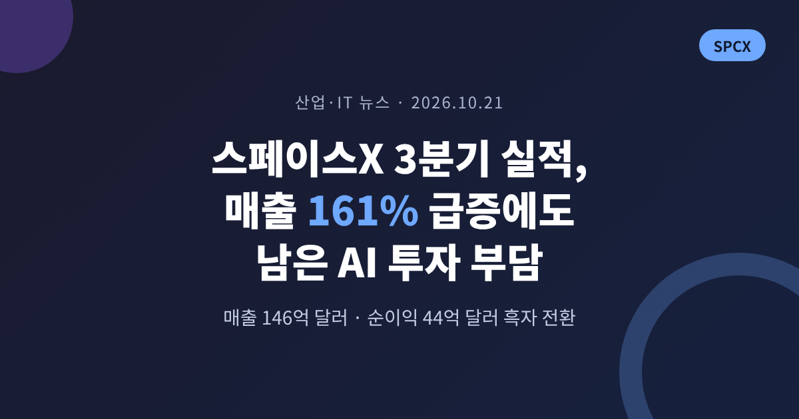
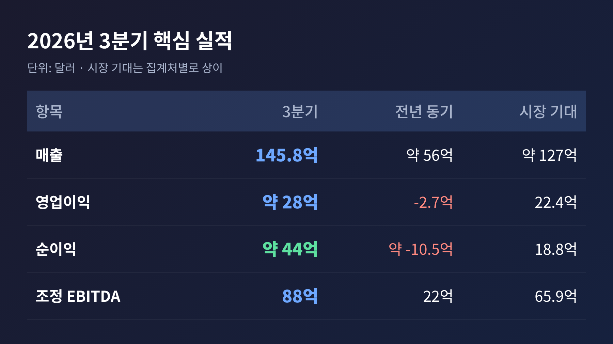
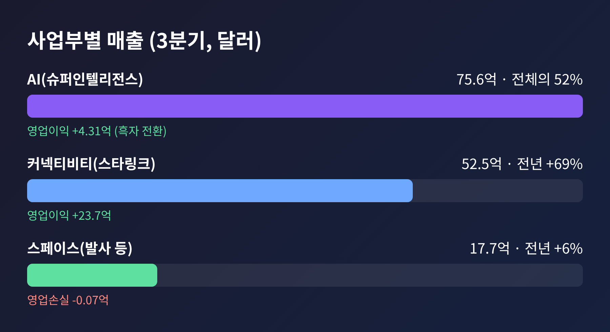
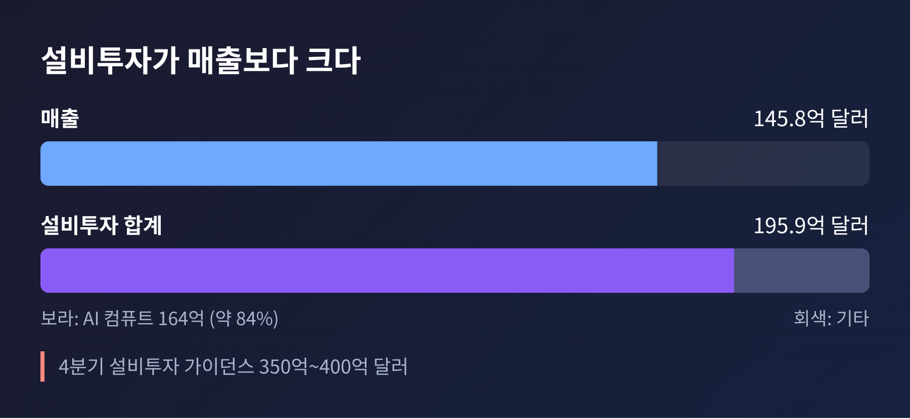
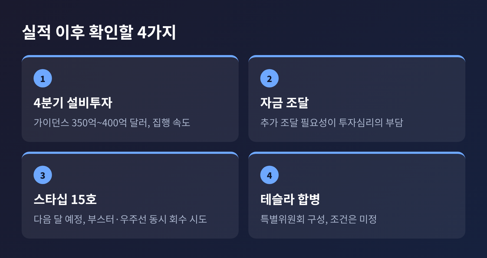

이번 글에서는 한국시간 10월 21일 새벽에 나온 스페이스X의 3분기 실적을 정리해 보겠습니다. 전날 나온 실적 앞둔 프리뷰와 달리, 이번에는 발표된 숫자와 그 의미를 중심으로 살펴봅니다. 이 글은 정보 정리이며 투자 권유가 아닙니다.
3줄 요약
미국 동부시간 10월 20일 장 마감 후 발표된 매출은 약 145.8억 달러입니다. 1년 전 약 56억 달러였으니 2.6배 가까이 커진 셈입니다.
시장 기대는 달랐습니다. LSEG 집계 컨센서스는 약 127.2억 달러였고, 실제 매출은 이를 약 15% 웃돌았습니다. 소스마다 컨센서스가 127억~128.7억 달러로 조금씩 다르다는 점은 밝혀 둡니다.
이익 쪽 변화가 더 극적입니다. 순이익은 약 44억 달러입니다. 1년 전에는 약 10억 달러 넘는 순손실이었습니다. 영업이익도 약 28억 달러로, 전년 동기 영업손실 2.7억 달러와 대비됩니다. 조정 EBITDA는 88억 달러로 306% 늘었습니다.
주당순이익은 보도마다 다릅니다. 0.35달러로 전한 매체가 많고, 조정 기준 0.45달러로 전한 곳도 있습니다. 정의의 차이로 보이지만 확인되지 않았습니다.

예전엔 스페이스X 하면 로켓 발사였습니다. 지금은 AI입니다.
AI 부문(슈퍼인텔리전스)은 매출 75.6억 달러로 1년 전보다 약 9배 커졌습니다. 외부 기업에 빌려주는 컴퓨트, 인수한 코딩 도구 Cursor, 그록의 성장이 함께 작용했습니다. Cursor는 8월 중순부터 9월 말까지 6.08억 달러를 보탰습니다.
스타링크가 속한 커넥티비티는 52.5억 달러로 69% 늘었습니다. 소비자 가입자는 약 1,360만 명으로 분기에 160만 명 늘었고, 영업이익 23.7억 달러는 AI 부문과 비교하면 수익의 질에서 여전히 앞섭니다. 발사 중심의 스페이스 부문은 17.7억 달러로 6% 성장에 그쳤고 영업손익은 700만 달러 적자였습니다.

한 가지 짚을 점이 있습니다. AI 부문의 영업이익 4.31억 달러는 Cursor 관련 주식보상비용 12억 달러를 반영한 수치입니다. 이를 제외하면 16억 달러라고 회사는 설명했습니다. 반대로 TechCrunch는 비트코인 가격 회복에서 온 약 10억 달러 같은 비핵심 이익이 섞였을 가능성을 언급했습니다. 이익의 질은 분기를 더 지켜봐야 알 수 있습니다.
이번 실적은 스페이스X가 발사 회사에서 AI 인프라 회사로 무게중심을 옮겼음을 숫자로 보여 줍니다. 상장 후 첫 흑자 분기라는 점도 상징적입니다.
CFO는 신규 컴퓨트 투자의 회수 기간이 1년 미만이라고 밝혔습니다. 컴퓨트는 내부 사용과 외부 임대가 대략 절반씩이고, 단기 계약 중심입니다. 수요가 있을 때는 빠르게 돈이 되지만, 수요가 꺾이면 가격 압박을 먼저 받을 수 있는 구조이기도 합니다.
수주잔고는 630억 달러이며, 이 가운데 약 420억 달러가 1년 안에 매출로 인식될 예정입니다.
흑자의 이면에는 큰 지출이 있습니다. 3분기 설비투자는 약 195.9억 달러로 분기 매출보다 많았습니다. 이 중 AI 컴퓨트가 약 164억 달러, 전체의 84%입니다. 매출 1달러를 올리는 데 약 1.34달러를 쓴 계산이라는 분석도 있습니다.
4분기 설비투자 가이던스는 350억~400억 달러입니다. 월가 예상이 약 200억 달러 안팎이었다는 보도를 감안하면 눈높이를 크게 넘었습니다. 다만 한 전사본은 이 수치를 "이번 분기"로 적어 해석에 오류 가능성이 있습니다.
모건스탠리의 애덤 조나스는 추가 자금 조달 필요성이 투자심리의 핵심 부담이라고 지적했습니다. 도이치뱅크의 에디슨 유는 컴퓨트 배치 속도가 2027년 전망의 최대 변수라며, 경영진 목표보다 낮은 약 6GW를 가정한다고 밝혔습니다. 이익이 났다는 사실과, 이 속도의 투자를 감당할 수 있는가는 별개의 질문입니다.

2027년 1분기 매출 가이던스는 330억~370억 달러입니다. 월가 예상 약 222억 달러보다 49~67% 높습니다. 머스크는 2027년 말 연환산 매출이 5,000억~1조 달러에 이를 수 있다고 말했는데, 이는 공식 가이던스가 아닌 발언이고 소스에 따라 하한이 1,000억 달러로 기록된 곳도 있습니다. 실제 매출과는 구분해서 보셔야 합니다.
주가는 시간외에서 올랐지만 폭은 보도마다 다릅니다. 1.6%로 전한 곳부터 5%, 8.5%, 10% 이상까지 있습니다. 시점이 달랐던 탓으로 보이며, 단일 확정치는 확인되지 않았습니다. 정규장은 소폭 하락으로 마감했고, 10월 들어 150달러 안팎에서 부진하던 흐름이었습니다.
변수는 하나 더 있습니다. 머스크는 테슬라와의 합병을 "좋은 아이디어"라고 말했고 양사는 특별위원회를 꾸렸습니다. 다만 조건은 정해지지 않았고 성사도 보장되지 않습니다. 머스크의 테슬라 지분은 약 20%라 주주 과반 동의가 필요합니다.
10월 21일 국내 증시에서는 우주항공 테마주가 동반 상승했습니다. 한국경제 보도 기준 장중 켄코아에어로스페이스가 약 7~8%, 에이치브이엠과 스피어, 와이제이링크가 3% 안팎 올랐습니다. 스페이스X 투자 자산을 가진 미래에셋벤처투자와 미래에셋증권도 올랐습니다.
다만 시점별로 수치가 다르고, 개별 기업이 스페이스X 매출과 얼마나 직접 연결되는지는 기사에서 확인되지 않습니다. 보도 자체도 "옥석 가리기가 필수"라고 짚었습니다. 실제 수주와 실적을 확인하는 일이 먼저입니다.

단기 일정은 분명합니다. 스타십 15호가 다음 달 예정이며, 부스터와 우주선을 함께 회수하는 시도가 계획돼 있습니다. 머스크는 성공 가능성이 "더 높다"고 말했습니다. 테슬라는 10월 21일 장 마감 후 실적을 발표해 합병 관련 추가 언급이 나올 수 있습니다.
중기 과제는 세 가지입니다. 컴퓨트를 계획대로 늘리는 속도, 그에 필요한 자금과 전력, 그리고 흑자가 일회성 요인 없이 이어지는지입니다.
정리하면 이렇습니다.
"매출은 폭발했고, 부담도 같이 커졌다."
이번 분기는 스페이스X가 AI 기업으로 증명된 첫 성적표이자, 얼마나 많이 써야 그 자리를 지킬 수 있는지 처음 드러난 성적표이기도 합니다. 다음 분기에 이 둘의 균형이 어떻게 맞춰질지, 숫자로 확인하실 수 있을 것입니다.
※ 이 글은 공개된 보도를 정리한 것이며 투자 권유가 아닙니다. 수치는 출처마다 다를 수 있습니다.